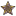

Wikipedia:Spoken articles
This page displays information about Spoken Wikipedia Project. Articles under each subject heading are listed alphabetically (by surname for people).
For help playing Ogg audio, see: Media help. To request an article to be spoken, see Requests. For all other information, see the project page.
| Wikimedia Commons has media related to Spoken Wikipedia. |
Contents
- 1 Art, architecture and archaeology
- 2 Biology and medicine
- 3 Business
- 4 Chemistry
- 5 Culture and society
- 6 Earth Sciences
- 7 Education
- 8 Economics
- 9 Food and drink
- 10 Geography and places
- 11 Geology, geophysics, and mineralogy
- 12 History
- 13 Internet
- 14 Language and linguistics
- 15 Law and crime
- 16 Literature
- 17 Mathematics
- 18 Media
- 19 Music
- 20 Philosophy
- 21 Physics and astronomy
- 22 Politics and government
- 23 Psychology
- 24 Recreation and leisure
- 25 Religion, mysticism, and mythology
- 26 Royalty, nobility and chivalry
- 27 Sport and games
- 28 Technology
- 29 Transport
- 30 War
- 31 Wikipedia-related
- 32 See also
- 33 External links
Articles are marked in the following ways:
- Articles marked with  were featured articles at the time of recording.
- Bolded articles have been featured, with an audio link, on the Main Page.
There are 1,355 spoken articles in English.
Art, architecture and archaeology[edit]
Architecture · Baden-Powell House · Bidet · Matthew Brettingham · Capsule hotel · Edward Clifford · The Dog (Goya) · John Douglas (architect) · Adam Elsheimer · Ima Hogg · I-35W Mississippi River bridge · Museum of Bad Art · Opaline glass · Palladian architecture · Portrait of a Lady · Francis Petre · Sam A. Scribner · Theory of Colours · VJing · Warlugulong · Western (genre) · Westminster Abbey · Xanadu House
Biology and medicine[edit]
Abiogenesis (Part 1) (Part 2) (Part 3) (Part 4) · Action potential · Amanita Phalloides · American Black Vulture · American Goldfinch · American Livestock Breeds Conservancy · Antarctic krill · Apophallation · Arctic Tern · Australian Ringneck · Baby Gender Mentor · Bank myna · Breanna Lynn Bartlett-Stewart · Bioinformatics · Bird (Intro) · Bird (Anatomy) · Blue Whale · Bobcat · California Condor · Cane Toad · Cat (Part 1) (Part 2) · Cattle Egret · Chiffchaff · Cicada · Cladistics · Cleavage (breasts) · Coconut crab · Columbian mammoth · Computational neuroscience · Cougar · David After Dentist · Deinosuchus · Dinosaur · DNA · DNA repair · Elfin-woods Warbler · Elongate carpet shark · Emu · Eurasian beaver · Evolution · Fauna of Australia · Folding@home · John Fraser (botanist) · Gene · Glasses · Green and Golden Bell Frog · Grey Heron · Guide dog · Humans (Part 1) (Part 2) (Part 3) (Part 4) · Introduction to evolution (Part 1) (Part 2) (Part 3) (Part 4) · Introduction to viruses · Island Fox · Jaguar · Mammary intercourse · Mantis · Masters and Johnson · Mitochondrial Eve · Mourning Dove · Neural network · Northern Pintail · Pegging (sexual practice) · Plumbeous Water Redstart · Rare Breeds Canada · Ropica biroi · Short-beaked Echidna · Synapse · Tasmanian Devil · Tawny Owl · Ten percent of brain myth · Turkey Vulture · White's Tree Frog
Medicine[edit]
AIDS · Alzheimer's Disease · Elizabeth Blackwell · Blindness · Death erection · Fentanyl · Fetal trimethadione syndrome · Gaucher's Disease · Helicobacter pylori · Hickey (injury) · Management of multiple sclerosis · Pathogenic bacteria · Timothy E. Quill · Retinitis pigmentosa · Subarachnoid hemorrhage
Business[edit]
Andrew Carnegie (Part 1) (Part 2) · Angel (Company) · Embrace, extend and extinguish · Richard Branson · The Dilbert Principle · Display Advertising · Elderly Instruments · Howard Hughes · Kenneth Lay · Precision marketing · Richard Topus · Vector Marketing · Virgin Galactic
Non-profit organizations[edit]
Chemistry[edit]
Caesium · Helium · Hydrochloric acid · Hydrogen (Part 1) (Part 2) · Raney Nickel · Oxygen (Intro) · Plutonium · Soap Rebatching · Titanium · Yttrium · Zinc
Culture and society[edit]
Accessibility · Aggie Bonfire · Arctic Boosh · Audio description · Autoboosh · BDSM (Part 1) (Part 2) · Beijing opera · Kira Buckland · Bukkake · James Bulger · Brfxxccxxmnpcccclllmmnprxvclmnckssqlbb11116 · Canadians · Child · Clitoral Erection · Cock and ball torture · D. B. Cooper · Culture of Aruba · Daylight saving time · Dewey Lake Monster · Dirty Sanchez (sexual act) · Eagle Scout (Boy Scouts of America) · Edinburgh Fringe · Erotic spanking · Exploding whale · Terry Fox · Furry fandom · Handjob · Jim Henson · Hook 'em Horns · Indigenous people of the Everglades region · Islamic feminism · Japanese toilet · Kimono · Krampus · Mantra-Rock Dance · Microwave-related injury · The Mighty Boosh (1998 stage show) · Monty Hall problem · Oktoberfest · Oral stimulation of nipples · Priapus · Project Gutenberg · Royal Order of Scotland · Same-sex marriage in Spain · Siesta · The Simpsons · Soggy biscuit · Suspension (body modification) · George Campbell Tinning · Tupperware · Ubuntu (ideology) · Vanilla sex · Whuppity Scoorie Day · Wood Badge
Earth Sciences[edit]
Climate change · Fossil fuel · Selleophytum
Education[edit]
Acharya Jagadish Chandra Bose College · Adrianne Wadewitz · Annandale High School · Birkdale School · George Mason University · The Green (Dartmouth College) · Hunter College High School · Lee University · Leonard Independent School District · Monifieth High School · Peer review · Some Thoughts Concerning Education · Stuyvesant High School · University of Brasília · University of Rhode Island · Western Reserve Academy · Wymondham College
Economics[edit]
500 euro note · Boukaseff Scale · Christopher Cox · Economy of Ontario · Gold Standard · McJob · Quantity theory of money Wage reform in the Soviet Union, 1956–1962
Food and drink[edit]
Berliner (pastry) · Beverage can stove · Birthday cake · Butter knife · Chai · Cheese · Coleslaw · Dim sum · Durian · Fork · Ice cube · Lard · Maid café · Ribena · Spoo
Geography and places[edit]
African Union · Altrincham · Aruba · Aviano Air Base · Azerbaijan (Intro) · Baie-Johan-Beetz, Quebec · Birchington-on-Sea · British Empire · Brownhills · Canada · Chicago · Chickasaw Turnpike · Christ Church, Barbados · Copetown, Ontario · Creagerstown, Maryland · Dorset · Elworth · Eppertshausen · Exmoor · Germany (Part 1) (Part 2) · Herne Bay, Kent · Hong Kong · Ivy, Virginia · Jamaica (Part 1) (Part 2) · Julesburg, Colorado · Hundertwasserhaus · Island Beach, New Jersey · Košice · Krini, Greece · La Paz · Lewisville, Texas · List of Manhattan neighborhoods · Lithia Park · Manchester (Part 1) (Part 2) · Mayfield (Middletown, Delaware) · Middle East · Mill Ends Park · Minneapolis · Montreal · Montreat, North Carolina · Monument to the Great Fire of London · Mount Pinatubo · Namibia · Nouakchott-Nord Region · Old Man of the Mountain · Oldham · Oriel College · Parks of Chicago · Peterborough · Pointe-Claire · RAF Daws Hill · RAF Northolt · Pittsfield Charter Township, Michigan · Reykjavik (Intro) · Ruthin · Saint Petersburg · Sanford (Amtrak Station) · Sarajevo · Scout Moor Wind Farm · Shahreza · Shaw and Crompton · Sheerness · Sheffield · Sims, North Dakota · Soe, Viljandi County · Stephens City, Virginia · Stoneham,_Massachusetts · Stretford · Sydney (Part 1) (Part 2) · Tallinn · Trincomalee · Tompkins County, New York · Torcello · Trafford · Urbanization · Vaughan, Ontario · Vignacourt · Waterfall Gully, South Australia · Westgate-on-Sea · Weymouth · Ys
Geology, geophysics, and mineralogy[edit]
1755 Lisbon earthquake · 1968_Illinois_earthquake · 1973 world oil market chronology · 2005 Atlantic hurricane season · 2006 Atlantic hurricane season · Chrysoberyl · Cyclone Elita · Cyclone Tracy · Diamond · Ediacara biota · Effects of Hurricane Ivan in the Lesser Antilles and South America · Galveston Hurricane of 1900 · Hong Kong Observatory · Hurricane Claudette (2003) · Hurricane Dog (1950) · Hurricane Grace (1991) · Hurricane Ismael · Jurassic · Lake Nyos · Meteorological history of Hurricane Katrina · Oil shale · Tropical Depression Ten (2005)
History[edit]
1910 London to Manchester air race · 1958 Tybee Island mid-air collision · 1991 Hamlet chicken processing plant fire · American Airlines Flight 11 · Aztalan State Park · Beauchamp-Sharp Tragedy · Black Seminoles · Calcutta Flag · California Gold Rush (Part 1) (Part 2) · Confederate government of Kentucky · Eastern Bloc Edward Low · England expects that every man will do his duty · Eureka Stockade · Angelo Fabroni · Fourth Crusade · Han dynasty · Helen Gandy · History of New Jersey (Part 1) (Part 2) · History of Jordan · History of Lebanon (Part 1) (Part 2) (Part 3) · History of Russia · History of Saudi Arabia · History of Syria · History of the Grand Canyon area (Part 1)(Part 2) · History of the Middle East · History of the State of Israel (Part 1) (Part 2) · History of the world · Iron Curtain · Julius Caesar (Part 1) (Part 2) (Part 3) · Jersey Shore shark attacks of 1916 · Klaipėda Revolt · Laika · Marshall Plan · Mayflower · Nazi Germany · Ottoman Empire (Part 1) (Part 2) · Peterloo Massacre · Renaissance · Rosa Parks · Samantha Smith · Siege of Antioch · Siege of Tyre · Space Race (Part 1) (Part 2) · Space Shuttle Challenger Disaster (Part 1) (Part 2) (Part 3) (Part 4) · Spanish Armada · Treaty of Devol · United States Marine Corps · United States Sesquicentennial coinage · Wang Jingwei · George Washington (Part 1) (Part 2) · Washington's crossing of the Delaware River · Wife Selling (English Custom) · Wilmington Insurrection of 1898 · X Article · Yen Hsi-shan
Internet[edit]
Acid2 · Adam Curry · Facebook · 4chan · Godwin's law · Golden Shield Project · Homestar Runner · Richard Kyanka · Lolcat · The Million Dollar Homepage · Quality of Service · Redbana Corporation · Red vs. Blue (Part 1) (Part 2) · Search engine optimization · HTTP cookie · Storm botnet · Troye Sivan · Jimmy Wales · Wiki · YouTube
Language and linguistics[edit]
Alliterative verse · Braille · Buffalo buffalo Buffalo buffalo buffalo buffalo Buffalo buffalo · Consonant · Esperanto · French language in Laos · Gemination · Hànyǔ Shǔipíng Kǎoshì (Chinese Proficiency Test) · Hindi (Part 1) (Part 2) (Part 3) (Part 4) · Intonation (linguistics) · Language · Longest word in English · Milanese · Nigga · Paraprosdokian · Rosetta Project · Sogdian language · Split infinitive · Stuttering (Part 1) (Part 2) (Part 3) · Three men make a tiger · Transliteration · Truthiness · Vowel · Welsh language · William Labov · Hubert Blaine Wolfeschlegelsteinhausenbergerdorff, Sr.
Law and crime[edit]
Accurate News and Information Act · Americans with Disabilities Act of 1990 · Article One of the United States Constitution (Part 1) (Part 2) (Part 3) · Steven Avery · David Berkowitz · Copyright · Creative Commons · Crushing by elephant · CSI Effect · Elizabeth Needham · First Amendment to the US Constitution · Federalist No. 42 · Fuck: Word Taboo and Protecting Our First Amendment Liberties · Equal Protection Clause (Part 1) (Part 2) · Harassment in the United Kingdom · Insider Trading · Paul Kirk · Law Reform (Year and a Day Rule) Act 1996 · Luka Magnotta · Mootness · Mumia Abu-Jamal (Part 1) (Part 2) (Part 3) · Leonard Padilla · Parliament Acts · Robert Garran · Rinderkennzeichnungs- und Rindfleischetikettierungsüberwachungsaufgabenübertragungsgesetz · Roe vs. Wade · Sega v. Accolade · Signature · Territorial Clause · Wyoming Department of Corrections · United States Constitution
Literature[edit]
Douglas Adams (Part 1) (Part 2) · The Adventures of Tintin · The Aleph (short story) · Octavia E. Butler · Anton Chekhov · The Coral Island · Dark romanticism · John Day (printer) · Disneyland with the Death Penalty · Down to a Sunless Sea · Zelda Fitzgerald · Forty winks · The Giver · The Gruffalo · Hamlet · The Hitchhiker's Guide to the Galaxy (Part 1) (Part 2) · Hrafnkels saga · The Illuminatus! Trilogy · Kindred (novel) · C. S. Lewis · Lilith's Brood · Literary criticism · Archibald MacLeish · Maus · William McGonagall · Mom & Me & Mom · Robert Muchamore · Nyarlathotep · Edgar Allen Poe · Poetry · Politics and the English Language · Post Office (novel) · Thomas Pynchon (Part 1) (Part 2) · The Raven · Sex and sexuality in speculative fiction · William Shakespeare · Holly Short · A Sound of Thunder · Three Laws of Robotics · To Kill a Mockingbird (Part 1) (Part 2) · J. R. R. Tolkien · Ulysses (poem) · Watchmen (Part 1) (Part 2) (Part 3) · Mary Wollstonecraft · The Wonderful Wizard of Oz · The World Without Us
Mathematics[edit]
0.999... · Julia Set · Median test · P versus NP problem · Prisoner's Dilemma
Media[edit]
1937 Fox vault fire · 300 (film) · Adewale Akinnuoye-Agbaje · All I Want for Christmas (film) · Kate Austen · Nick Bakay · Julian Barratt · Bitch (Magazine) · Dave Brown (comedian) · Boone Carlyle · But I'm a Cheerleader · Ana Lucia Cortez · Annabel Chong · Ali G · All your base are belong to us · Al'kesh · Mackenzie Allen · An Inconvenient Truth · Bart the Genius · BBC Radio 4 · Billboard (advertising) · Tom Bosley · Julie Brown · The Cat in the Hat (film) · Bubbles the Clown · Chansey · Chattanooga Times Free Press · CKSY-FM · Coronation Street · Countdown (game show) · Dalek (Part 1) (Part 2) (Part 3) · Doctor Who · Susan J. Douglas · The Economist · Gail Edwards · Entertaining Angels: The Dorothy Day Story.ogg · Luciano Ercoli · Michael Fielding · Noel Fielding · Film4 · Ford Nation · Fuck (film) · Rich Fulcher · Greatest Hits (Lost) · Green Wing (Series 1) · Jean Grey · Jake Gyllenhaal · Haibane Renmei · Flood (Halo) · Harry Potter · Harry Potter (film series) · Hell Is Other Robots · Jim Henson · The Hitcher (character) · Homer's Odyssey (The Simpsons) · Homer's Phobia (episode of The Simpsons) · Hong Kong action cinema · Desmond Hume · Katherine Jackson · Peter Jennings (Part 1) (Part 2) · Jin-Soo Kwon · Sarah Lane · Claire Littleton · Libby (Lost) · LibriVox · List of The Mighty Boosh episodes · Lost (TV series) (Part 1) (Part 2) · Love Actually · Mary Elizabeth McGlynn · Pilot (House) · Troy McClure · Meerkat Manor · The Mighty Boosh · The Mighty Boosh (radio series) · Not the Nine O'Clock News · Old Gregg · Charlie Pace · Podcasting · Pre-production · Pulitzer Prize · The Quatermass Experiment · Hugo "Hurley" Reyes · Shannon Rutherford · SFM Holiday Network · Jack Shephard · Simpsons Roasting on an open fire · Some Enchanted Evening (The Simpsons) · SpongeBob SquarePants · Star Trek · Star Trek II: The Wrath of Khan · Star Wars Episode I: The Phantom Menace · Star Wars Episode II: Attack of the Clones · Julia Stiles · Sweet (film) · There's No Disgrace Like Home · This is Wonderland · Through the Looking Glass (Lost) · Uma Thurman · Tommy Wiseau · Trapped in the Closet (South Park) · Unnatural Acts (TV series) · The West Wing (television) · Maisie Williams · "Worst Episode Ever" · V'ger
Music[edit]
All I Want for Christmas Is You (Vince Vance & The Valiants song) · Baba O'Riley · Bandits of the Acoustic Revolution · The Beatles (Part 1) (Part 2) (Part 3) · Michelle Branch · Kevin Bowyer · Caravan (band) · Vanessa Carlton · Choir · Phil Collins · Kid Cudi · Pete Doherty · Nick Drake · Drum · Kerry Ellis · Fightin' Texas Aggie Band · Flanders and Swann · Flanging · Pink Floyd · Freak Out! · Dizzy Gillespie · Guido of Arezzo · Heavy Metal Umlaut · Eric Hope · Charles Ives · Avril Lavigne · Peter Maffay · Merry Christmas Darling · Merry Christmas with Love · Monkey Gone to Heaven · Nightwish · Christopher O'Riley · Oasis · Ocarina · Roy Orbison · Henry Purcell · Roland RE-201 · Reggae · Rush (band) · Bud Shank · The Smashing Pumpkins · Song of Innocence' · Subterranean Homesick Blues · Taliesin Orchestra · (I Can't Get No) Satisfaction · Static X · Timpani · U2 · Hayley Westenra · Who Wants to Live Forever · Vampire Weekend · Yes (band) · WOW Gospel 2000
Philosophy[edit]
Connectionism · Free Will · Immortality · Paradox · Ayn Rand (Part 1) (Part 2) · Russell's Teapot · Susan Haack · Trolley Problem
Physics and astronomy[edit]
Aegaeon (moon) · Anthe (moon) · Archimedes · Asteroid Belt · Atlas (moon) · Babinet's_principle · Big Bang · Binary star (Part 1) (Part 2) · Black (color) · Calypso (moon) · Comet Shoemaker-Levy 9 · Daphnis (moon) · Dione (moon) · Dyson sphere · Earth (Part 1) (Part 2) (Part 3) (Part 4) · Enceladus (moon) · Epimetheus (moon) · Extrasolar planet · Fermi paradox (Part 1) (Part 2) (Part 3) · Grandfather Paradox · GRB 970508 · Helene (moon) · Hubble Space Telescope · Hyperion (moon) · Iapetus (moon) · Ijiraq (moon) · Introduction to M-theory · Janus (moon) · Michio Kaku · Kilometre · Kiviuq (moon) · Light year · Mercury (planet) · Methone (moon) · Mimas (moon) · Night · Oberon (moon) · Oort Cloud · Open cluster · Robert Oppenheimer · Paaliaq (moon) · Pallene (moon) · Pan (moon) · Pandora (moon) · Phoebe (moon) · Planetary habitability · Polydeuces (moon) · Prometheus (moon) · Quantum optics · Rhea (moon) · Shen Kuo · Saturn · 90377 Sedna · Siarnaq (moon) · Louis Slotin · Solar eclipse (Part 1) (Part 2) · Space Elevator · Tarqeq (moon) · Telesto (moon) · Tethys (moon) · Titan (moon) · Transit of Venus · Universe (Part 1) (Part 2) (Part 3) (Part 4) · Zero-point energy
Politics and government[edit]
Bhutanese Passport · Pierre Trudeau · Frédéric Bastiat · Jeff Baxter (politician) · George H. W. Bush · George W. Bush · Bill Clinton · Joint Chiefs of Staff · Coat of arms of Aruba · Winston Churchill (Part 1) (Part 2) (Part 3) · Martha Layne Collins · Derbyshire Constabulary · Controversy · Demon Cat · European Economic Community · Finance and Expenditure Committee · Flag of Canada · Flag of Laos · George Washington's Farewell Address · Hammer and sickle · William Wright Heard · Thomas Jefferson (Part 1) (Part 2) (Part 3) · Harry Jenkins, Sr. · John Locke · Harvey Milk · Maternalism · McGillicuddy Serious Party · Missouri Department of Conservation · New Jersey Surcharge · Barack Obama · Florida Highway Patrol · Old City Hall (Toronto) · Parliament of the United Kingdom (Part 1) (Part 2) · Plaid Cymru · Read my lips: no new taxes · Ronald Reagan · Red Scare · Edmund G. Ross · Franklin D. Roosevelt · Roger Salengro · Stop Online Piracy Act · Tower Block of Commons · Supreme Court of the United States · United States Congress · United States Declaration of Independence (Part 1) (Part 2) · United States House of Representatives · United States Senate · Universal suffrage · Special administrative region (People's Republic of China) · George Washington (Part 1) (Part 2) · Larry Winn · Ralph Yarborough · You forgot Poland
Psychology[edit]
Anxiety Disorder · Autism (Part 1) (Part 2) · Biological Psychology · Diagnostic and Statistical Manual of Mental Disorders · Global Assessment of Functioning · Hypochondria · Learned helplessness · Limerence · Mental illness · Milgram experiment · Psychologist · Shyness · Social anxiety · Thought
Recreation and leisure[edit]
Religion, mysticism, and mythology[edit]
2012 phenomenon · American Standard Version · Antidisestablishmentarianism · Brother André · Catholic Church · The Church of Jesus Christ of Latter-day Saints · Demetrius of Alexandria · God · Greek mythology · Hinduism (Part 1) (Part 2) (Part 3) (Part 4) · Jesus · Latter Day Saint Movement · Martin Luther · Mortara case · Mu (lost continent) · Namazu (Japanese mythology) · Radha · Royal Maundy (Part 1) (Part 2) · Saint Demetrius of Thessaloniki · Saint Peter · Sola gratia · Transhumanism · Twelve Imams · Voluntary Human Extinction Movement · Week of Prayer for Christian Unity · Wyvern · Xenu
Royalty, nobility and chivalry[edit]
Alexandra of Denmark · Anne of Great Britain · Princess Elizabeth of Clarence · Victor Emmanuel, Prince of Naples · Grace (Style) · Carl XVI Gustaf of Sweden · Hereditary peer · House of Hanover · House of Lancaster · House of Windsor · House of York · John of Ibelin, the Old Lord of Beirut · Prince John of the United Kingdom · Mary II of England · Order of Canada · Order of the Bath · Order of the Garter · Elizabeth I of England (Part 1) (Part 2)
Sport and games[edit]
1994 San Marino Grand Prix · 1995 Japanese Grand Prix · 1995 Pacific Grand Prix · 2011 Wuxi Classic · AFGNCAAP · Age of Empires · Rene Ahrens · Dylan Alcott · All Blacks · Alleyway · Mark Altmann · Dennis Anderson · Michael Anderson · Troy Andrews · Angry Birds · Apogee Stadium · Arsenal F.C. · Art Wiebe · Aston Villa F.C. · Atari video game burial · Kieran Ault-Connell · Australia Paralympic Committee · Backgammon · Katerina Bailey · Greg Ball · Barbie: Game Girl · Petrea Barker · Kelly Barnes · Paul Barnett · Tracy Barrell · Ryley Batt · Moe Berg · Sara Blicavs · Bobsleigh · Jean-Claude Bouttier · Bridgehampton Polo Club · Burundi women's national football team · Buzkashi · Caesars Palace (video game) · Canada men's national softball team · Chelsea F.C. · Chess · Chinese Taipei men's national softball team · Cities XXL · Civilization II · College football · A. E. J. Collins · Color a Dinosaur · Copa Libertadores · Rohanee Cox · Cricket · WWE Cruiserweight Championship · Cuba men's national softball team · Custom Robo · Christie Dawes · Dirty Harry (1990 Video Game) · Jeremy Doyle · Dreamcast · Dungeons and Dragons · Dover Athletic F.C. · Eggbeater kick · Louise Ellery · WWE European Championship · Everton F.C. · E.V.O.: Search for Eden · FIFA World Cup Final Fantasy VI · Finnish Paralympic Committee · Football (soccer) · Formula One: Built to Win · Four-minute mile · Kylie Gauci · Gilberto Silva · Gillingham F.C. · Glicko rating system · Goalkeeper (water polo) · Golden Age of Arcade Games · Grim Fandango · Guam men's national softball team · Guitar Hero (video game) · Half-Life 2 · Alex Harris · Hockey Hall of Fame · Hungary at the 1988 Winter Olympics · Brad Imes · Indonesia men's national softball team · Alice Ingley · Ipswich Town F.C. · Satoru Iwata · Japan men's national softball team · Leek Town F.C. · Lego · Lemmings (video game) · Adrian Lowe · Luton Town F.C. · Manchester City F.C. · Margate F.C. · Megan Timpf · Metal Gear Solid · Michael Jordan · MicroProse · Million Dollar Championship · Paul Mitchell (athlete) · Grant Mizens · Monkey Island series · Monster truck · Multi Theft Auto · David Munk · My Life My Love: Boku no Yume: Watashi no Negai · Myst · Myst III: Exile · Gail Nicholson · Norwich City F.C. · Need for Speed: Hot Pursuit (2010 video game) · Rodney Nugent · Chris Nunn · Kristin Otto · Over the Edge (1999) · Papua New Guinea men's national softball team · Paralympics New Zealand · Perfect Dark · Daniel Polson · Premier League · Richard Scarry's Busytown · Rick Rude · Riven · Rodent's Revenge · Rynearson Stadium · S12 (classification) · Alexi Salamone · Casey Samuels · Sheffield Wednesday F.C. · Sigi Schmid · Singapore men's national softball team · Solid Snake · Sporting Wheelies and Disabled Association · SummerSlam (2003) · Super Mario 64 · Sydney Uni Water Polo Club · York City F.C. · Tee · The Game (mind game) · ToeJam & Earl · Undercover Cops · United States men's national softball team · Vectrex · Virgin Islands men's national softball team · Wii Play: Motion · Women's squash in Australia · Women's surfing in Australia · Women's tennis in the United States · Yao Ming · Zanzibar women's national football team · Zorbing
Technology[edit]
Agile software development · Astroturf · Bob Parsons · Caesar cipher · carrier wave · central processing unit (Part 1) (Part 2) · Common Language Runtime · computational geometry · computer accessibility · Everybody Votes Channel · FemTechNet · FriendFeed · Functional programming · gedit · IBM WebSphere MQ · Interactive voice response · Satoru Iwata · Java (software platform) · JavaScript · Ray Kurzweil · Logitech · Markup language · Mattel Aquarius · Merkle Tree · Microsoft Bob · Microwave radio relay · Minecraft · NeXT · NonVisual Desktop Access · Parallel computing · Patrick Norton · PHP · OpenBSD · Open Source Software CD · Read-only memory · Representational State Transfer · Research and Development Establishment · Dennis Ritchie · RollerCoaster Tycoon 2 · Science News · Service-oriented architecture (SOA) · Louis Slotin · Technological singularity · Teledildonics · Ken Thompson · Titan (supercomputer) · Ubuntu (Linux distribution) · Windows "Vienna" · VoiceXML · Larry Wall · Zalman · Zerocoin · Zerocoin
Transport[edit]
Air-tractor sledge · Austin-Bergstrom International Airport · Bicycle · Bicycle lighting · Breiðdalsvík Airport · Burns Municipal Airport · Camden Town tube station · Center High-Mounted Stop Lamp · Civil Air Patrol · Deepwater Horizon · Docklands Light Railway · Dumb Iron · East Finchley tube station · Eurotunnel · Finchley Central tube station · Fleet Vehicle · Hellingly Hospital Railway · High Barnet tube station · Imperial Airlines Flight 201/8 · Interstate 15 in Arizona · Interstate 35 · Indian Railways · Kent Station (Cork) · M62 motorway · M-185 (Michigan highway) · Manchester Bolton & Bury Canal · Mass Rapid Transit (Singapore) · Montréal-Mirabel International Airport · Mornington Crescent tube station · NightRide · New York State Route 174 · Oval tube station · Pacific Southwest Airlines Flight 1771 · S. A. Andrée's Arctic balloon expedition of 1897 (Part 1) (Part 2) · Sokolnicheskaya Line · Sound Transit · SS Ohioan (1914) · Submarine · Tay Bridge Disaster · Transport in Andorra · Transport in Laos · Tulskaya (Metro) · Underground Electric Railways Company of London · Vaughan Metropolitan Centre (TTC) · West Finchley tube station · Winter service vehicle · Woodside Park tube station
War[edit]
Attack on Pearl Harbor (Part 1) (Part 2) · Battle of Aljubarrota · Battle of Fredericksburg · Battle of the Somme · Battle of Vimy Ridge · Battle of Wake Island · Boshin War · James Brogan (Medal of Honor) · John Hines · Cold War · Doolittle Raid · Felix von Luckner · Harry Aubrey de Maclean · Kargil War · Origins of the Cold War · Poison gas in World War I · Chesty Puller · Revolt of the Admirals · Ship commissioning · Ship naming and launching · Tank · War elephant · War of the Stray Dog · Washington Army National Guard · World War I (Part 1) (Part 2) (Part 3) · Yan Xishan
[edit]
Wikipedia · Wikipedia:Assume good faith · Wikipedia:Be bold in updating pages · Wikipedia:Etiquette · Wikipedia:Ignore all rules · WP:STUPID · Wikipedia:Neutral point of view (Part 1) (Part 2) (Part 3) · Wikipedia:No climbing the Reichstag dressed as Spider-Man · Wikipedia:No Legal Threats · Wikipedia:No personal attacks · Wikipedia:No original research · Wikipedia:No self attacks · Wikipedia:Snowball clause · Wikipedia:Sockpuppetry · Wikipedia:Proposed deletion (part 1) · Wikipedia:There's no common sense · Wikipedia:Three-revert rule · Wikipedia:Use common sense · Wikipedia:Vanispamcruftisement · Wikipedia:Verifiability · Wikipedia:What Wikipedia is not · Wikipedia:WikiProject Spoken Wikipedia
See also[edit]
- Wikipedia:Pediaphon, generating audio files of any Wikipedia article using speech synthesis
- Category:Spoken articles